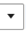
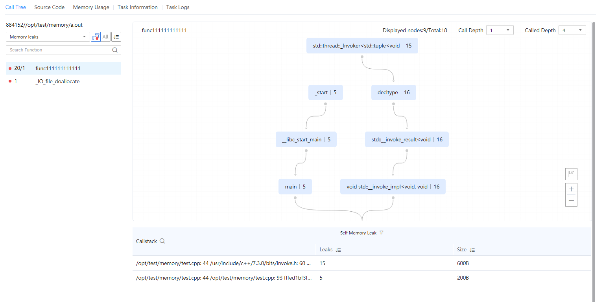

Prerequisites
A memory leak diagnosis task has been created and the analysis has been completed.
Procedure
- In the Project Management area, click
 before the target project and analysis task.
before the target project and analysis task.The node list is displayed.
- Click the name of the target node to view the analysis result.Click the node name. The Call Tree tab page is displayed by default, as shown in Figure 1. For details about the parameters, see Table 1.
Table 1 Call Tree parameters Parameter
Description
Process
Process name.
You can select a process from the drop-down list.
Memory leaks
Number of memory leaks
NOTE:You can also select Leaked memory size or Memory release exceptions from the drop-down list.
Call Depth
Depth that extends downwards
Called Depth
Depth that extends upwards
Self Memory Leak
Self memory leak information
NOTE:You can click
 to view self memory leak information or subprogram memory leak information.
to view self memory leak information or subprogram memory leak information.Function
Function that has memory leaks
Leaks
Number of leaks.
You can click
 to sort the functions by number of leaks.
to sort the functions by number of leaks.Size (Byte)
Size of the leaked memory
Click
 to sort the functions by leaked memory size.
to sort the functions by leaked memory size.
- Click
 to view the functions with self memory leaks, click
to view the functions with self memory leaks, click  to view all functions with memory leaks of the entire call stack, and click
to view all functions with memory leaks of the entire call stack, and click  to sort the functions by number of leaks or leaked memory size.
to sort the functions by number of leaks or leaked memory size. - Click
 to zoom in or zoom out the callstack diagram and click
to zoom in or zoom out the callstack diagram and click  to save the SVG diagram.
to save the SVG diagram. - In a node box, the function name is displayed on the left, and the number of leaks or the leaked memory size is displayed on the right. The red dot indicates that the function has memory leaks.
- When you move the cursor to a node in the chart, the corresponding information is displayed. Click View Code. In the window that is displayed on the right, you can view the code of the function that has memory leaks.
- Click
- Click  to select Leaked memory size from the drop-down list. See Figure 2.
- Click
 to select Memory release exceptions from the drop-down list. See Figure 2.Figure 3 Memory release exceptions
to select Memory release exceptions from the drop-down list. See Figure 2.Figure 3 Memory release exceptions
 Click
 to expand the table header and select the columns to be displayed.
to expand the table header and select the columns to be displayed.You can click View Code in the Operation column to view the code of the function that has memory release exceptions.
- Click the Task Information tab to view the detailed configuration and sampling information about the task on the current node.
If the task fails to be executed, the failure cause is displayed on the Task Information tab page.
- Click the Task Logs tab page to view the detailed log information.